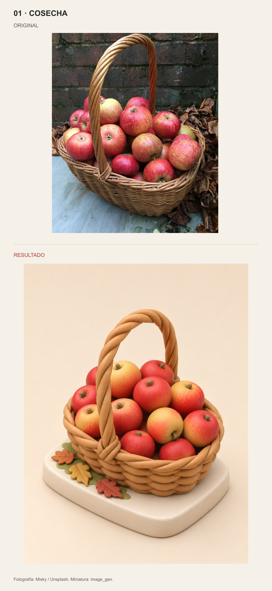
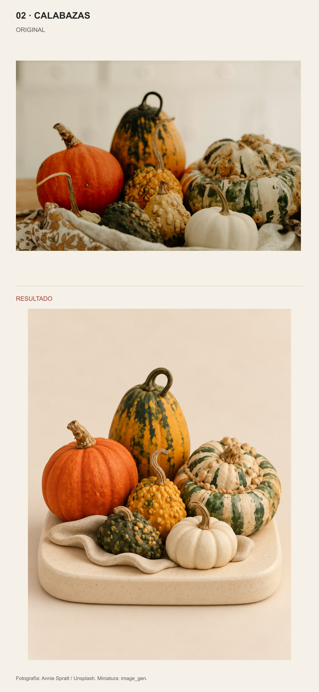
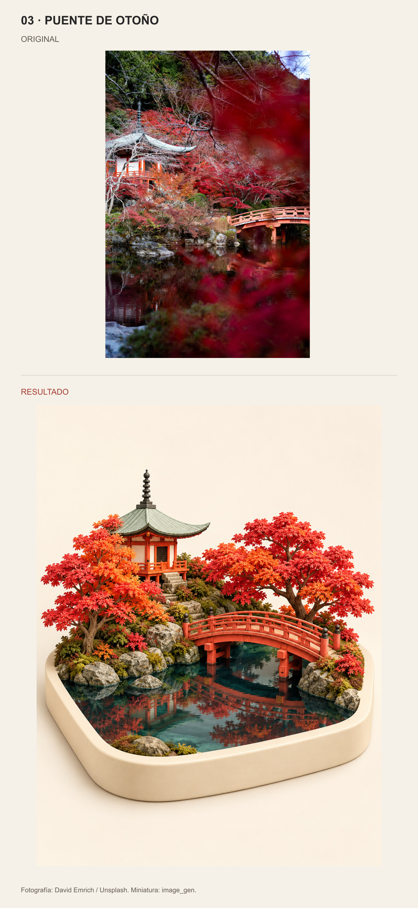

01 · COSECHA

Fotografía: Misky / Unsplash. Miniatura: image_gen.
Original arriba · Resultado abajo. Proporciones completas, sin recortes. Skill · Documentación y fuentes

Fotografía: Misky / Unsplash. Miniatura: image_gen.

Fotografía: Annie Spratt / Unsplash. Miniatura: image_gen.

Fotografía: David Emrich / Unsplash. Miniatura: image_gen.